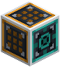

The Model Core

The Model Core feeds text into your machines and judges what comes back. Its front sends out tokens; every other face takes in the model's scores. It trains the model, tests it, and saves it as a model. The trained weights stay in the machines themselves, so a model keeps what it learned when you leave and come back.
 Crafting
Crafting


Data
Four slots for what the model practises on: datasets, archive drives, or a salvaged model. Everything in them is practised together, a batch from each in turn. Beside them are the tokenizer slot, for the tokens the model reads and writes, and the checkpoint slot, with what the checkpoint in it holds. Save to checkpoint tests the model on every benchmark and saves it into that checkpoint. With a salvaged model loaded, Rebuild builds its machines in front of the Core: see Salvaged Models.
Train
The learning curve, the current numbers and the training settings. See Training for what each one means. Params counts the model's weights; Grad norm is the size of the last gradient; Threads is how many threads the Core trains with.
Tests
Every benchmark, its score at the last test, and the score that passes. The test of each benchmark is taken while the model trains on it; Test all runs every test now. Hover over an benchmark for the format its test uses. See Models and Tests.
Try
Runs the model. Choose an benchmark: Example draws a fresh test example and shows the model answering it, the way an agent would ask. For Orders, type an order and Ask; for Reading, type the start of something and Write: the model carries it on one letter at a time, drawing each from its predicted probabilities. Temp (temperature) sharpens or flattens those probabilities before drawing:

Low temperatures repeat the model's favourite continuations; high ones take more risks. The bars show how likely the model found each candidate for the first letter it wrote.
Inspect
Every machine of the model in the order data reaches it, with its output shape, its number of weights and the size of its last gradient. Problems found by Check are listed here too. A bar that shrinks to nothing as you go down the list is a gradient that never arrives.
More threads

Each Training Accelerator touching the Core, directly or through other Accelerators, lends it one more thread, up to the limit the server allows. An Accelerator with nothing to cool it runs hot and lends half: give it water, ice or snow to touch. The Fabricator makes them from a matrix multiply photomask.
Tensor CasingGold IngotWeight CrystalBlock of RedstoneModel Core